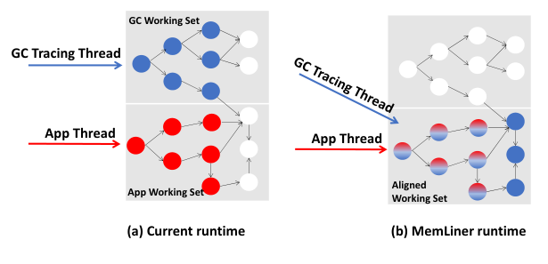
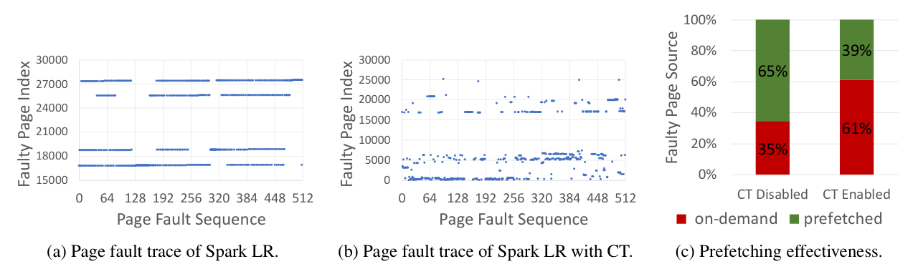
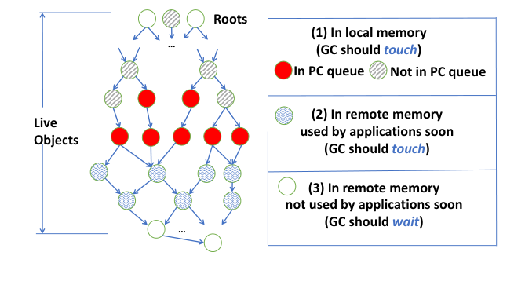
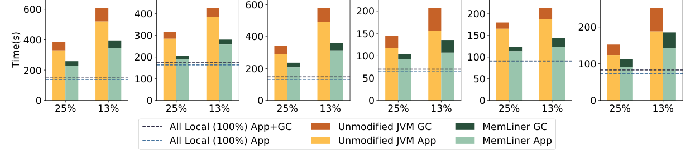
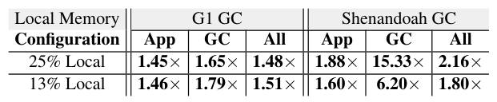
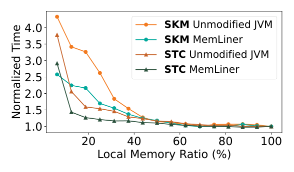
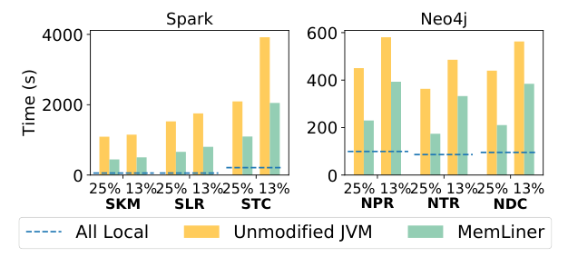
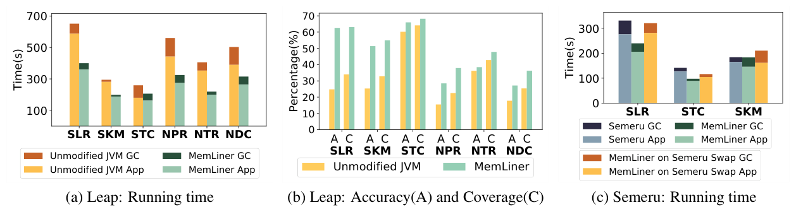
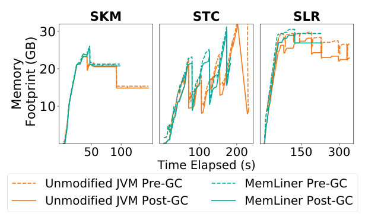

MemLiner: Lining up Tracing and Application for a Far-Memory-Friendly Runtime
This page was written by an AI model to give a high-level overview of the paper. Please check the paper for detail: USENIX.
Datacenters are increasingly memory constrained, and far-memory systems let a process use remote memory beyond its host's local capacity. The dominant design is cache-and-swap: local memory acts as a software-managed cache, and a page fault on a missing page triggers an RDMA fetch from a remote server. Good locality and effective remote-memory prefetching are what make this fast. Most datacenter workloads, however, run on managed languages (Java, Scala, and similar) with automatic garbage collection (GC). Application threads touch heap objects along their program's execution path, while GC threads concurrently trace the same heap, independently, to find all objects still reachable from the roots. Because these two access orders are uncoordinated, they build two disjoint working sets.
That disjointness causes two concrete problems. First, resource competition: pages brought in for GC's traversal are often not needed again soon by the application, and vice versa, so each side's accesses evict pages the other side needs, multiplying local-memory misses and RDMA traffic. Second, ineffective prefetching: even when the application's own accesses are a simple sequential scan, the combined stream of application and GC faults looks random to an OS-level prefetcher, which then gives up. A seemingly easy fix, disabling concurrent tracing, does not work: collectors built around continuous, low-pause concurrent tracing (Shenandoah, ZGC) rely on it for correctness, and even G1, which can trace in a stop-the-world pause instead, pays for it with an 18% slower end-to-end time in the paper's measurements, because aggregated stop-the-world GC periods become 2.7x longer and can trigger a single full-heap pause of 76.9 seconds. Prior far-memory systems (InfiniSwap, FastSwap, the Leap prefetcher) optimize the OS swap path but are agnostic to the runtime above it; AIFM gives native C/C++ programs an efficient user-space remote-memory API but requires rewriting them and does not apply to managed languages; Semeru removes GC interference by offloading all tracing to a dedicated lightweight JVM on the memory server, at the cost of extra compute there, cross-server coordination overhead, and an assumption of fuller resource disaggregation than most clouds have today.
MemLiner's idea is to align the two access orders instead of separating them: working set alignment. Two observations make this possible. Objects that GC's tracing eventually marks live are, almost all, objects the application accesses at some point during execution, just not at the same moment as GC visits them. And while reordering the application's own accesses would break program semantics, reordering GC's tracing order never does, since tracing's only job is to mark every reachable object live, in whatever order is convenient.
Mechanically, MemLiner piggybacks on the GC's existing read/write barriers: every time an application thread dereferences an object pointer, the barrier pushes that object's address into a thread-local producer-consumer queue (PQ). Concurrent tracing threads drain this queue first, marking the pushed ("red") objects live immediately and also speculatively tracing a few pointer hops forward from them, since those objects are likely to be touched by the application soon. Once the queue is empty, tracing falls back to ordinary root-based graph traversal for everything else, but it postpones marking any object it estimates is not currently in local memory, using a small epoch-based timestamp encoded directly into the object's own pointer bits. A postponed object is retried later, up to an auto-tuned delay limit, so GC never falls dangerously behind on reclaiming memory.
MemLiner is implemented inside G1 and Shenandoah in OpenJDK 12, atop an RDMA swap system, with no application changes. Across Spark, Cassandra, Neo4j, QuickCached and DayTrader under 25% and 13% local-memory configurations, it improves end-to-end execution time by 1.48x and 1.51x for G1, and 2.16x and 1.80x for Shenandoah, while cutting on-demand swap-ins by an average of 81%. Under the Leap prefetcher it still improves performance by 1.6x on average and raises prefetching accuracy and coverage, and without offloading any computation remotely it matches the performance of the fully offloaded Semeru runtime when running over Semeru's own swap system.

Key takeaways
- Under far memory, uncoordinated application and GC-tracing accesses build two disjoint working sets, causing mutual page eviction and defeating OS-level prefetchers.
- GC's tracing order is free to change without breaking correctness; MemLiner uses that freedom to "line up" tracing with the application's actual access order.
- Mechanism: read/write barriers push accessed objects into a producer-consumer queue; GC traces those immediately plus a few hops forward, and postpones objects it estimates are remote using an epoch timestamp embedded in the object pointer, with the postponement bound auto-tuned by heap occupancy.
- Built into both G1 and Shenandoah atop OpenJDK 12 and an RDMA-based swap system, requiring no changes to applications.
- End-to-end speedups of 1.48x to 2.16x (average, across two local-memory ratios) over the unmodified JVM on Spark, Cassandra, Neo4j, QuickCached and DayTrader; also improves the Leap prefetcher's effectiveness and matches Semeru's performance without offloading computation.
From disjoint working sets to a lined-up tracer
Concurrent GC background, the measured problem, object classification, the coordination mechanism, the tracing algorithm, and the per-GC implementation.
1 · Background: concurrent tracing in modern GCs
A GC's job has two parts: trace the heap graph from a set of roots (stack and global variables) to find the transitive closure of live objects, and reclaim everything outside that closure. Tracing conceptually colors objects white (candidate for reclamation), gray (reachable but not yet scanned) or black (scanned, reachable, safe). Tracing repeatedly pulls an object from the gray set, marks it black, and adds its referents to gray, until gray is empty; anything left white is garbage. Pausing all application threads for this (stop-the-world) is simple but slow, so since G1 (Oracle's default JVM GC) all modern collectors, including Shenandoah (Red Hat) and ZGC (Oracle), run tracing concurrently with the application, typically using a snapshot-at-the-beginning (SATB) algorithm that tolerates concurrent allocation and pointer updates. G1 still reclaims memory (evacuation) in a stop-the-world phase; Shenandoah and ZGC run evacuation concurrently too, trading throughput for lower pause times.
2 · The problem, measured
The authors ran Spark Logistic Regression on G1 with 25% of its working set in local memory, and sampled 512 consecutive page faults with and without concurrent tracing enabled.

Without concurrent tracing, application threads alone show a clear streaming fault pattern; with it enabled, the combined fault trace looks essentially unstructured. Quantifying this over 500 application-execution phases, the fraction of faults resolved by Linux's default swap prefetcher (rather than an expensive on-demand remote fetch) drops from 65% to 39% once concurrent tracing is on, and the per-thread fault rate jumps from 3.5K to 9.6K per second. Disabling concurrent tracing is not a real fix, though: Shenandoah and ZGC require it for their concurrent reclamation to work at all, and even for G1, disabling it increases end-to-end time by 18% on average across 10 runs, because the aggregated stop-the-world GC time grows 2.7x (the paper measured a single full-heap pause of 76.9 seconds for Spark LR without concurrent tracing).
3 · The key insight: classify reachable objects by where and when
MemLiner's design starts from the observation that nearly every object GC must trace is also accessed by the application at some point, just not at the same time. At any instant, live objects fall into three categories: (1) objects recently accessed by the application and still in local memory; (2) objects currently in remote memory but about to be accessed soon, typically a few pointer hops from a Category-1 object in the same data structure; (3) objects in remote memory that were used a while ago and are not needed again soon.

Within Category 1, some objects are directly visible to GC because the application told GC about them (the "red" objects below); others are missed because of how that communication channel is implemented (the "striped" objects, discussed next). MemLiner's goal is to have GC trace Category 1 and Category 2 objects right away, since doing so causes no unnecessary page faults, and to delay tracing Category 3 objects, since tracing them now would pay a swap cost that may be wasted.
4 · Application-GC coordination: barriers and a producer-consumer queue
To let GC see what the application is touching, MemLiner instruments every heap field read (a = b.f) and write (b.f = a) using the read/write barrier already present in modern GCs for other bookkeeping purposes.
- On a read or write through object
b, the instrumentation pushesb's address into a thread-local producer-consumer queue, PQ, implemented as a non-blocking ring buffer. - Each application thread has its own PQ, so producers need no synchronization; concurrent tracing (consumer) threads dequeue with atomic instructions and can steal work across PQs.
- Producers never block: if a PQ is full, a new push overwrites an unconsumed entry. This only delays that object's priority tracing; it will still be found by GC's regular traversal, so correctness is unaffected.
- Before enqueuing, a thread checks the object's bit in the global live bitmap and skips the push if it is already set, filtering out most repeat accesses to the same object.
Objects dropped from the PQ by overwriting are exactly the "striped" Category-1 objects from the previous section: still local, but missed by the priority path, so they fall back to being picked up by GC's normal traversal.
5 · The tracing algorithm: alternating between PQ and the regular queue
Each concurrent tracing thread alternates between two modes. Whenever its PQ is non-empty, it switches into a priority mode: it dequeues a red object, marks it live, and recursively follows its reference fields forward up to a fixed depth (3 by default) to also mark the nearby Category-2 objects live; any references beyond that depth are pushed into the regular tracing queue instead of followed immediately, since long reference chains are less likely to be used by the application soon. When the PQ is empty, tracing resumes its regular graph traversal from the tracing queue, exactly as an unmodified concurrent GC would, except for one change: before marking an object, MemLiner checks whether it looks local or remote (described next); if it looks remote, the object is pushed back onto the tracing queue with an incremented delay counter instead of being traced immediately, up to a per-object limit, after which it is traced regardless so the closure computation is not stalled indefinitely.
The remaining question, covered next, is how a tracing thread can tell a local object from a remote one without the prohibitive cost of a system call per object visited.
6 · Estimating locality: epochs and pointer timestamps
MemLiner divides execution into epochs, periods during which the set of local-memory pages belonging to the JVM process stays relatively stable; a modified kernel swap path tracks this set and advances a global epoch counter whenever the change exceeds a threshold fraction of the process's pages. Every 64-bit object reference reserves 4 otherwise-unused bits as a timestamp, which is overwritten with the current epoch ID whenever the pointer is dereferenced by an application read or write (the 42 bits used for addressing a 4 TB space are untouched, so normal memory accesses are unaffected). During tracing, comparing an object's timestamp to the current epoch gives a cheap, approximate answer to "was this object touched recently" without any syscall: a timestamp close to the current epoch suggests the object is still local; a stale one suggests it has likely been evicted.
7 · Adapting the delay bound to reclamation urgency
How much postponement is safe depends on how urgently the GC needs to finish. MemLiner tracks heap occupancy upon each allocation and defines three zones: a red zone below 15% available memory, a yellow zone between 15% and 50%, and a green zone above 50%. The per-object delay limit, MAX_DL, is set to 0, 2 or 4 respectively in these zones, chosen empirically and used across all evaluated applications. The two adaptation mechanisms work together: the epoch mechanism reflects how much interference is occurring (a fast-changing epoch means poor locality, so most objects look stale and tracing naturally slows down to yield to the application); the zone mechanism reflects how urgently GC itself must finish, and can override the first mechanism by forcing MAX_DL to 0 when the heap is nearly full, regardless of how stale objects' timestamps look.
8 · Per-GC integration and barrier overhead
MemLiner is built into both G1 (throughput-oriented, generational, partly stop-the-world) and Shenandoah (latency-oriented, fully concurrent tracing and evacuation), requiring no application changes in either case. Shenandoah already uses both read and write barriers for its own concurrent tracing and evacuation, so adding MemLiner's queue pushes costs little extra. G1 originally used only a write barrier, so naively adding a read barrier would be expensive; three optimizations keep the added overhead low: the barrier only enqueues while concurrent tracing is actually running; it skips references into the young generation, since G1's concurrent tracing never scans those anyway; and it skips re-timestamping a pointer whose timestamp already matches the current epoch. With these in place, MemLiner's barriers add an average of 5% overhead to G1 and 2% to Shenandoah when the whole application fits in local memory (no swapping). Performance results from this implementation are covered in the Evaluation tab.
Evaluation
What the paper measures across G1, Shenandoah, the Leap prefetcher and Semeru, and what each result shows.
MemLiner is implemented on OpenJDK 12.0.2 and Linux 5.4.0, with a re-implemented FastSwap-based RDMA swap system. All experiments use a 32 GB Java heap with 4 KB pages, under two enforced local-memory ratios (25% and 13% of the heap, via cgroup), consistent with ratios used in prior far-memory papers.
| What | As stated in the paper |
|---|---|
| Platform | Two servers, each with two Xeon E5-2640 v3 CPUs, 128 GB memory, one 1 TB SSD, and a 40 Gbps Mellanox ConnectX-3 InfiniBand adapter, connected via a 100 Gbps InfiniBand switch; one server runs the JVM, the other serves remote memory over RDMA |
| Workloads | Spark MLlib KMeans, Linear Regression and Transitive Closure (SKM, SLR, STC); Cassandra update/read/insert-intensive workloads (CUI, CRI, CII); Neo4j PageRank, Triangle Counting, Degree Centrality (NPR, NTR, NDC); QuickCached write- and read-dominant workloads (QWD, QRD); DayTrader (DTS) |
| Baselines | Unmodified G1 GC; unmodified Shenandoah GC; the Leap OS-level prefetcher on the unmodified JVM; Semeru, a memory-disaggregated runtime that offloads GC entirely to memory servers |
| Metrics | End-to-end execution time, split application vs. GC time; number of on-demand and total swap-ins; Leap's prefetching accuracy and coverage; pre- and post-GC memory footprint |
MemLiner speeds up G1 across every workload tested

What it shows. For each of the twelve workloads (Spark, Cassandra, Neo4j, QuickCached, DayTrader) under 25% and 13% local memory, bars split application time (bottom, light) from GC time (top, dark) in seconds, comparing the unmodified G1 GC (yellow) to MemLiner (green); dashed lines mark the application-only and total time when the whole heap fits in local memory (no swapping). MemLiner improves over unmodified G1 on every workload, for an average 1.48x speedup at 25% local memory and 1.51x at 13%. Compared to the fully-local (no-swap) case, unmodified G1 is 2.17x and 3.73x slower at 25% and 13% local memory respectively; MemLiner narrows that to 1.47x and 2.48x. MemLiner also cuts on-demand swap-ins by an average of 81% and total swap-ins (on-demand plus prefetched) by 56%.
What to take from it. The biggest GC-time reductions appear in workloads (SLR, STC, CUI, NDC, QWD, DTS) where the unmodified JVM's GC time balloons at 13% local memory because slow concurrent tracing cannot finish a closure before the heap fills, forcing a costly full-heap GC; MemLiner's alignment keeps concurrent tracing fast enough to avoid most of these. Cassandra additionally suffers extra slowdown at 13% from its own disk-spilling trigger, which more frequent full-heap GCs make worse under the baseline; MemLiner reduces that secondary effect too.
Speedups hold for application time and GC time separately, for both collectors

What it shows. The table reports, for G1 and Shenandoah under 25% and 13% local memory, the speedup (unmodified-JVM time divided by MemLiner time) broken into application time, GC time, and overall. For G1: 1.45x/1.65x/1.48x (app/GC/overall) at 25% and 1.46x/1.79x/1.51x at 13%. For Shenandoah: 1.88x/15.33x/2.16x at 25% and 1.60x/6.20x/1.80x at 13%.
What to take from it. MemLiner's GC-time speedup is consistently larger than its application-time speedup, and especially large for Shenandoah (up to 15.33x), which runs concurrent tracing far more aggressively than G1 and therefore suffers much more interference without MemLiner. Application time still improves meaningfully (1.45x to 1.88x), which the paper attributes to fewer local-memory misses from reduced resource competition, not to any change in what the application itself does.
Benefit grows as local memory shrinks, and disappears around 50%

What it shows. For SKM and STC run under a sweep of local-memory ratios, the figure plots normalized execution time (relative to the fully-local case) for the unmodified JVM and for MemLiner. Both curves rise as local memory shrinks, but the unmodified JVM's curve rises much faster; the two curves converge to roughly the same value once the local-memory ratio reaches about 50% or above.
What to take from it. This matches the paper's stated limitation directly: MemLiner's benefit is proportional to how memory-constrained the application is, and it offers essentially no advantage once more than half the working set already fits locally, since in that regime there is little resource competition or prefetching confusion to fix in the first place.
Shenandoah benefits even more, because its baseline is hurt more by interference

What it shows. Using smaller datasets than the G1 experiments (needed to keep Shenandoah's much slower baseline runs tractable), the figure compares the unmodified Shenandoah GC and MemLiner, split into application and GC time, against an all-local dashed reference, for three Spark and three Neo4j workloads at 25% and 13% local memory. Unmodified Shenandoah slows down by more than 10x for Spark workloads and more than 4x for Neo4j workloads at 25% local memory. MemLiner achieves the overall 2.16x (25%) and 1.80x (13%) speedups reported in Result 2, reducing on-demand swap-ins by 82% and 79% and total swap-ins by 56% and 22% at 25% and 13% respectively.
What to take from it. Shenandoah is not generational, unlike G1, so it must concurrently trace essentially the whole live heap on every cycle, running many more concurrent tracing threads whose uncoordinated accesses interfere heavily with the application; this is exactly the regime where aligning tracing with application accesses helps most, which is reflected in Shenandoah's larger relative speedups.
MemLiner also helps an advanced prefetcher, and matches a fully-offloaded design without offloading compute

What it shows. Panel (a) compares running time for three Spark and three Neo4j workloads under the Leap prefetcher, with and without MemLiner, at 25% local memory; panel (b) reports Leap's prefetching accuracy and coverage for the same workloads, with and without MemLiner; panel (c) compares running time for three Spark workloads across Semeru, MemLiner running on Semeru's own swap system, and MemLiner running on its default FastSwap-based swap system. Under Leap, MemLiner improves overall performance by an average of 1.6x and reduces on-demand swap-ins by 58% and total swap-ins by 53%, and it raises Leap's prefetching accuracy and coverage, though less so for STC and NTR (small live-object set for STC; inherently random application accesses for NTR). Against Semeru, MemLiner on Semeru's swap system performs comparably to Semeru itself, and MemLiner on its default swap system performs better than Semeru; Semeru crashed on the three Neo4j workloads (NPR, NTR, NDC) and is therefore absent from that comparison.
What to take from it. The Leap result shows MemLiner's benefit is not specific to a naive OS prefetcher: it also strengthens a prefetcher designed to detect patterns itself, because the underlying memory-access signal it produces is cleaner. The Semeru result shows MemLiner can reach similar performance to a design that offloads all GC computation to the memory server, without paying that design's extra remote compute cost or cross-server coordination overhead, and without that design's observed instability on the Neo4j workloads.
Delaying tracing does not meaningfully delay memory reclamation

What it shows. For SKM, STC and SLR under 25% local memory, the figure tracks memory footprint over time for the unmodified JVM and MemLiner, each split into pre-GC and post-GC footprint. For all three workloads, MemLiner's post-GC footprint closely tracks the unmodified JVM's, with only a slight increase in peak memory consumption.
What to take from it. MemLiner's postponement of "likely remote" objects is self-limiting: each object can be postponed at most MAX_DL times, and MAX_DL is forced to 0 once available heap space drops into the red zone (below 15%), so reclamation is never allowed to fall meaningfully behind even though tracing is otherwise delayed to reduce interference. The paper separately reports that disabling the epoch-estimation mechanism (while keeping the rest of MemLiner) degrades performance by 8.6% to 11.3% across SLR, SKM and STC, confirming that the estimation step, not just the PQ-based coordination, contributes to the overall gain.
FAQ
Q·What does "lining up" mean in the title?▾
It refers to aligning the memory-access order of GC tracing threads with that of application threads, so the two sets of threads tend to touch the same regions of the heap around the same time, instead of each independently generating its own working set.
Q·Is this a prefetcher, a swap system, or a GC change?▾
It is a GC change (implemented inside G1 and Shenandoah) plus a small kernel modification to track epoch boundaries for the swap system. It does not replace the prefetcher or the swap mechanism underneath it; the paper shows it improves results both with Linux's default swap prefetcher and with the more advanced Leap prefetcher.
Q·Why can't the problem just be solved by turning off concurrent GC tracing?▾
Concurrent, low-pause collectors such as Shenandoah and ZGC need concurrent tracing to reclaim memory at all; disabling it breaks their functionality. Even for G1, which can trace in a stop-the-world phase instead, doing so increased Spark LR's end-to-end time by 18% in the paper's measurements, because the aggregated stop-the-world GC periods became 2.7x longer, including a single 76.9-second full-heap pause.
Q·What is a read/write barrier, and why does MemLiner reuse it instead of adding something new?▾
A read/write barrier is a small piece of code the runtime already runs on every heap field read or write, normally for GC bookkeeping (for example, tracking cross-generation pointers). MemLiner adds a few instructions to this existing code path to push the accessed object's address into a queue, which keeps the added overhead low since the barrier machinery already exists in modern GCs.
Q·How does GC know which objects the application is about to touch?▾
It doesn't predict directly; instead, it follows a few pointer references forward (up to 3 hops) from objects the application just accessed. Since many data structures are accessed by walking nearby references, objects reached this way are often the ones the application will touch next.
Q·How does MemLiner tell if an object is in local or remote memory, without checking the page table for every object?▾
It reserves 4 spare bits in each 64-bit object pointer to store the ID of the execution "epoch" in which the object was last dereferenced. The kernel's swap system advances a global epoch counter whenever the process's resident page set changes substantially. Comparing an object's stored epoch to the current epoch gives a cheap estimate of recency without any system call.
Q·If memory is nearly full, isn't it risky to delay tracing some objects?▾
The paper bounds this risk two ways: each object can be postponed only a limited number of times (MAX_DL) before GC traces it regardless, and MAX_DL itself is forced to 0 once available heap space drops below 15% (the "red zone"), which removes the delay entirely under memory pressure. Measured post-GC footprints show only a slight increase in peak memory versus the unmodified JVM.
Q·Does an application need to be rewritten or recompiled to benefit from MemLiner?▾
No. MemLiner modifies the JVM's garbage collector and a small part of the Linux swap path; applications run unmodified on top of it, which the paper contrasts with AIFM, which requires applications to be rewritten against new remote-memory primitives.
Q·How is MemLiner different from Semeru?▾
Semeru redesigns the JVM into two parts, offloading all garbage collection to a lightweight JVM running on the memory server, so the application's local CPU sees no GC interference at all, but this costs extra CPU cores on the memory server and cross-server coordination. MemLiner keeps tracing on the local machine and instead coordinates it with the application, achieving comparable performance to Semeru (on Semeru's own swap system) in the paper's tests, without offloading any computation, and without Semeru's crashes on the Neo4j workloads tested.
Q·How is MemLiner different from general far-memory or page-tiering systems like InfiniSwap or FastSwap?▾
Those systems optimize the OS-level swap and paging path (for example, removing redundant block-layer overhead or using multiple queues) without any knowledge of what is running above them. MemLiner operates one layer up, inside the GC, and is explicitly about coordinating the GC's own memory accesses with the application's; the paper describes it as orthogonal to and compatible with swap-path optimizations like FastSwap, which MemLiner is in fact built on top of.
Q·Does MemLiner help if most of an application's data already fits in local memory?▾
Its benefit shrinks as the local-memory ratio grows, and the paper reports it offers essentially no improvement once the ratio reaches about 50% or higher, since there is little resource competition or prefetching confusion left to fix at that point.
Q·Does MemLiner reduce GC pause times?▾
Not directly. For Shenandoah, pauses are already short and largely unaffected, since the operations that require pausing involve few remote accesses. For G1, MemLiner reduces how often costly full-heap stop-the-world collections are triggered (by making concurrent tracing more efficient), but it does not shorten the pause time of any individual collection.